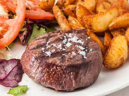

CARNES
-

Solomillo de ternera a la brasa
El romero, el tomillo y el ajo sazonan un solomillo de ternera entero que luego se asa a la parrilla hasta que adquiere un tono rosado.
-

Ribeye al Vino Tinto
Rib Eye a la Parrilla con Glaseado de Vino Tinto, un plato solo para los entendidos del buen comer.
-

Dados de Kobe con vegetales y salsa Teriyaki
Dados de carne de kobe con vegetales y salsa teriyaki, un plato inspirado en la cocina japonesa.